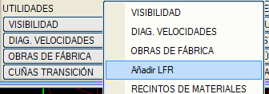
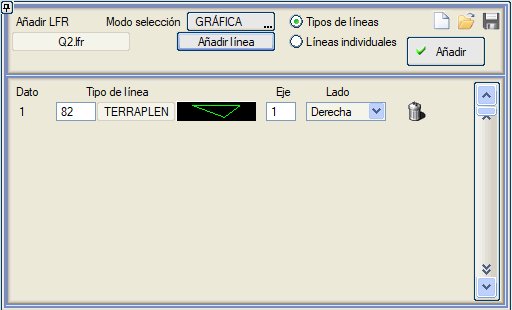
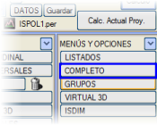
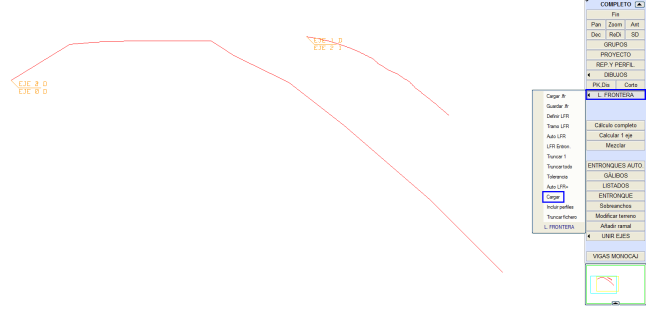

| |
|
SINIR ÇİZGİLERİ EKLE
|
Bu menü, Kot > Yardımcı Araçlar menüsünden erişilebilir ve sınır çizgileri dosyasına (.lfr uzantılı) haritalardan çıkarılan çizgilerin eklenmesini sağlar. Her bir seçilen çizgi tipi veya tekil çizgi için, budamanın yapılacağı eksen ve taraf (Sağ veya Sol) ilişkilendirilir. Eğer çizgi kapalı bir hat ise, budamanın içeriden mi yoksa dışarıdan mı yapılacağı seçilebilir. Eğer Proje sekmesinde (.lfr uzantılı) bir dosya mevcut değilse, temel taban adıyla bir dosya oluşturulur, aksi takdirde ISPOL.lfr adında bir dosya oluşturulur. 
Sınır çizgileri dosyasına (.lfr uzantılı) eklemek istediğimiz çizgi veya çizgileri tanımladıktan sonra, otomatik olarak .lfr dosyasına dahil edilmeleri için Ekle kutucuğuna tıklamalıyız. Bu çizgiler Grafik olarak, ekrandaki çizgiyi seçerek veya Sayısal olarak, programın ekranın alt kısmında isteyeceği çizgi numarasını belirterek eklenebilir. Bu menünün ayarlarını sırasıyla Kaydet veya Yükle kutucukları aracılığıyla yapabiliriz (  veya veya  ). ).  kutucuğundan başlayarak, işaretlediğimiz tüm çizgileri indirebiliriz. kutucuğundan başlayarak, işaretlediğimiz tüm çizgileri indirebiliriz.Proje sekmesinde tanımlanan .lfr dosyasına sınır çizgilerinin doğru bir şekilde eklenip eklenmediğini kontrol etmek için, Tamamını menüsüne gidip Proje sekmesindeki Sınır Çizgileri kutucuğuna eklediğimiz dosyayı yükleyebiliriz.  |